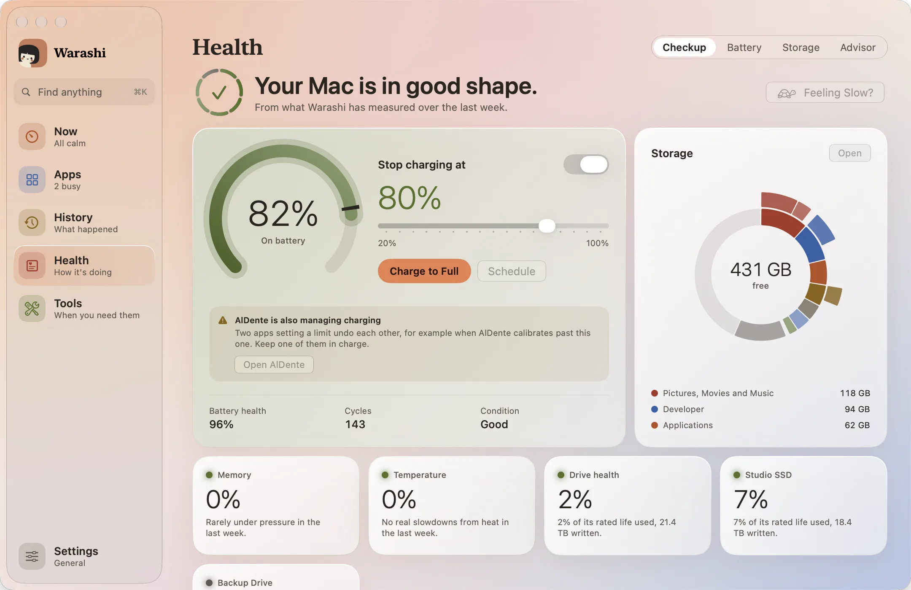
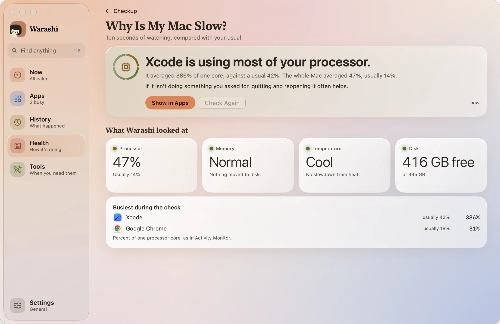
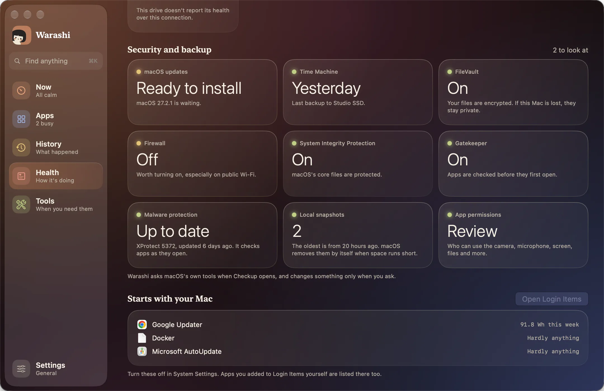

Controllo è la prima scheda in Salute (⌘4). Guarda l'ultima settimana e risponde a una domanda: il tuo Mac è in buona forma?


Il verdetto
In alto: Il tuo Mac è in buona forma., oppure cosa guardare, in parole semplici. Accanto, un anello con un segmento per ogni cosa controllata, ognuno del suo colore: verde se va bene, ambra se vale la pena dare un'occhiata, grigio se non si può leggere. Si basa su ciò che Warashi ha misurato nell'ultima settimana e si aggiorna ogni pochi minuti.
Cosa guarda
| Scheda | Cosa mostra | Quando ti chiede di guardare |
|---|---|---|
| Batteria | Carica, salute, cicli e condizione, con il limite di carica proprio accanto | Salute sotto l'85%; intervieni sotto l'80% |
| Spazio | Spazio libero e cosa riempie il disco, dalla tua ultima scansione di Spazio | Meno del 15% libero; agisci sotto i 10 GB |
| Memoria | Quanta parte della settimana il Mac è rimasto a corto di memoria | Un terzo della settimana o più |
| Temperatura | Quanta parte della settimana macOS ha rallentato il Mac per raffreddarlo | 2% della settimana o più |
| Salute dell'unità | Quanta parte della vita utile dichiarata del tuo SSD è stata usata | 70% o più, oppure errori |
| Unità esterne | Lo stesso per ogni disco collegato che segnala la sua salute | 70% o più, oppure errori |
Premi Memoria per vedere le app che la usano, Temperatura per la sua cronologia, oppure Apri su Spazio.
Perché il mio Mac è lento?
La settimana può sembrare a posto mentre in questo momento il Mac va lento. Premi Lento? accanto al verdetto, o scrivi “lento” in Cerca ovunque, poi continua a fare ciò che andava lento. Warashi osserva per dieci secondi, confronta ciò che vede con la settimana abituale del tuo Mac e indica la causa più probabile, con i suoi numeri e una cosa da fare:
- Calore: macOS sta rallentando il Mac per raffreddarlo.
- Memoria: il tuo Mac ha poca memoria e la sposta sul disco, con le app che ne tengono di più.
- Un'app: una sola app sta usando la maggior parte del processore, rispetto al suo livello abituale. Mostra in App la apre.
- Il lavoro di macOS: l'indicizzazione di Spotlight, un backup di Time Machine, Foto che analizza la libreria o un aggiornamento in preparazione. Finiscono da soli.
- Molte app insieme, un disco quasi pieno o la Modalità Risparmio Energia.
- Niente: se non spicca nulla, lo dice, con i numeri che ha visto. Un sito lento è più probabilmente colpa della tua connessione, quindi propone un test di velocità.


Sotto la risposta, Cosa ha guardato Warashi mostra processore, memoria, temperatura e disco, e le app più attive durante il controllo. Non viene registrato nulla oltre alla tua normale cronologia.
Sicurezza e backup
Nove riquadri mostrano quanto è protetto il tuo Mac. Premi un riquadro per aprire il punto di Impostazioni di Sistema dove si cambia.


| Riquadro | Cosa mostra | Quando ti chiede di guardare |
|---|---|---|
| Aggiornamenti di macOS | Se è in attesa un aggiornamento di macOS, e quando macOS ha controllato l'ultima volta | Un aggiornamento è pronto da installare |
| Time Machine | Quando il Mac ha fatto l'ultimo backup, e su quale disco | Non configurato, o nessun backup da una settimana |
| FileVault | Se i tuoi file sono cifrati | No |
| Firewall | Se le connessioni in entrata indesiderate sono bloccate | No |
| Protezione integrità del sistema | Se i file di base di macOS sono protetti | No |
| Gatekeeper | Se le app vengono controllate prima della prima apertura | No |
| Protezione da malware | XProtect, la protezione dal malware integrata in macOS: la versione delle sue definizioni e quando Apple le ha aggiornate l'ultima volta. Premilo, poi Controlla le app, per verificare la firma di ogni app ed elemento login sul tuo Mac: tutto ciò che nessuno sviluppatore identificato ha firmato, o che è cambiato dopo la firma, viene elencato con cosa fare | Nessun aggiornamento da un mese, il che significa che le risposte di sicurezza non arrivano a questo Mac |
| Snapshot locali | Quante copie Time Machine conserva sul disco stesso, e la più vecchia. macOS le rimuove da solo quando lo spazio scarseggia; premi qui, poi Libera spazio, per farle rimuovere subito a macOS. Il disco di backup non viene toccato | Mai: sono normali |
| Permessi delle app | Un elenco delle pagine della privacy nelle Impostazioni di Sistema (fotocamera, microfono, registrazione schermo, Accesso completo al disco e altro), ognuna a un clic di distanza | Mai: è una guida |
Warashi interroga gli strumenti di macOS quando si apre Controllo, e cambia qualcosa solo se lo chiedi. Per vedere la data dell'ultimo backup serve Accesso completo al disco.
Per essere avvisato senza aprire Controllo, attiva Backup in ritardo e Aggiornamento di macOS in attesa in Impostazioni › Avvisi. Finché uno dei due è attivo, Warashi li legge una volta al giorno e ti avvisa una sola volta: quando Time Machine non fa un backup da una settimana e quando un aggiornamento è in attesa da una settimana.
Homebrew
Se usi Homebrew, Controllo mostra quanti dei tuoi pacchetti hanno una versione più recente, con i primi e le loro versioni, e quanto è vecchio l'elenco di Homebrew (è fresco solo quanto il tuo ultimo brew update). Copia comando di aggiornamento copia brew update && brew upgrade per il Terminale, dato che un aggiornamento può richiedere tempo e chiedere la password. Versioni e download vecchi mostra cosa libererebbe brew cleanup, e Pulisci… lo esegue dopo la tua conferma. Warashi interroga Homebrew con l'aggiornamento automatico disattivato, così non va online.
Parte con il Mac
Sotto, tutto ciò che si è installato per partire con il Mac, dal più costoso, con l'energia usata da ciascuno questa settimana. Apri Elementi login ti porta in Impostazioni di Sistema per disattivarli.